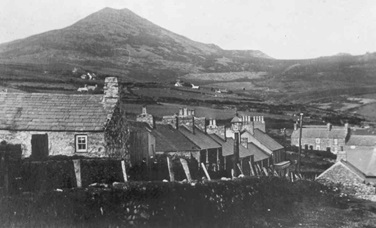

Cobbler’s Shack
Pengamfa was a little cottage in Pen Pistyll. Behind it you could find the shack of Wil, the cobbler. There was a paraffin lamp in Pen Pistyll. Lisa Elin’s father, Robat Gwilym’s grandfather was the lamplighter.

Wil, the cobbler’s workshop in Pen Pistyll. There was a paraffin lamp in Pen Pistyll. Lisa Elin’s father, Robat Gwilym’s grandfather was the lamplighter.